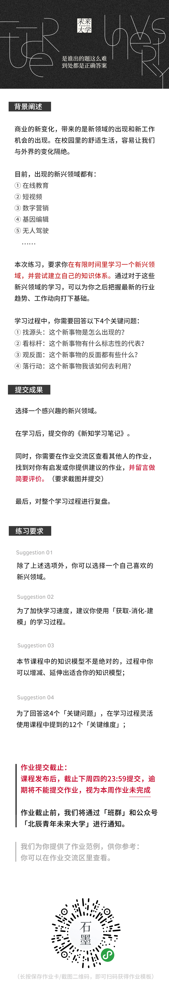
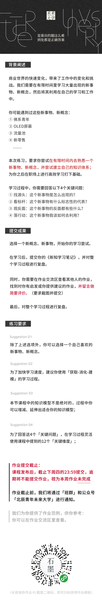

本周课程目录
主讲人：小马哥
世界500强公司营销总监/曾就职可口可乐、达能等跨国公司
「底层能力大课」
《结构学习本能》
如何有效学习陌生领域并建立知识体系？
一、时代变化影响的我们的学习
二、学习过程的三个阶段
三、知识模型：找源头
四、知识模型：看标杆
五、知识模型：观反面
六、知识模型：落行动
七、课程总结
课程导言
导言
遇见未来更好的自己，这里是未来大学，我是宋超。
我们邀请了小马哥，来自500强跨国公司的营销负责人。
其实在课程制作开始的时候，课程主题原本确定的是：如何持续地进行学习？也就是，内容更趋向于如何找到长久的学习目标。
然而，后来在和很多学员对话中发现，学习往往是一个遭遇战，也就是我们经常面临的难题是：如何在一个有限的时间内，高效地掌握一个陌生的知识版块。
包括我们在工作中，即使我们有了自己的学习计划，常常会遇到很多意想不到的新挑战，往往新的挑战是需要我们用新的知识去解决。这个时候，学习能力就是一种非常核心的底层能力了。
当我和小马哥谈到学习能力的核心是什么的时候？小马哥给出的答案就是，我们该如何搭建起自己的一套知识体系，然后利用这套知识体系去吸收和消化新知识。而知识体系的搭建，需要一个人长久的知识摄入和反思实践，这样我们才可以从中提炼出多种看待事物的新角度。而这些角度往往是学习一个新领域的关键入口。
在教研组的配合下，我们和小马哥共同梳理出了一套知识模型，来分享给你。希望帮助你获得一个成体系的学习视角，从而找到学习的关键切入点。
如果你已经报名了未来大学基石学院，那么就让我们马上开始本周的课程吧。
热身练习
假设你正在一家美妆品牌公司工作。
突然有一天，老板对你说：最近这个小红书势头很凶猛，媒体评论都说什么社交电商的时代来了，你去研究一下这个，下周一给整个部门做个报告。
章节一 我们面临的学习挑战
你好，我是小马哥，是一名职业经理人。我从事营销行业差不多有十多年了，服务过像可口可乐、达能这样的跨国企业，也经历过销售、市场、项目等多种职业角色。在我手里，也接触过大大小小的营销案例。
经常会有人问我这样一个问题：
作为一个从事营销领域的职业经理人，你所面对的最大的挑战是什么？
我的回答通常是：快速学习。
也就是我们每天都需要去学习新的事物、新的概念和新的知识。
为什么这么说呢？那是因为现在的商业社会变化实在太快了，你昨天刚学到的知识，可能明天就已经就落后了。我以我所在的行业为例：
站在2019年初的今天，我们回看1-2年前的生意模式，会觉得有些落后了，三年前社交电商刚刚兴起，而今天拼多多已经上市了。在拼多多之前，大家一度认为电商的新出路无法突破淘宝和京东模式。
而如今，除了拼多多，各种新的电商模式如雨后春笋，有靠提供知识和信息而兴起的知识付费平台，比如罗辑思维、年糕妈妈，在几天之内也能靠卖货突破上亿销售额；靠着KOL推荐的小红书，也形成了一套独特的社区电商氛围；甚至包括异军突起的娱乐APP抖音，也开始尝试新的商品变现之路。这就更不用说在各个垂直领域形成的新的商品交易模式。
商业格局的变化之快带来的是营销手段的快速变化，像传统的大电视大广告，报纸杂志投放，已经不再能够轻易地影响消费者。
随之而来的是，营销手段开始变得非常丰富，在形式上，比如直播、短视频、微信社群、博主KOL、图文漫画等等都是可以利用的营销新手段，而消费者接触的媒介也是非常丰富，一个小镇青年和一个都市白领，不同的用户群体，对于信息的使用习惯也是大有差异的，对于商品的购买决策同样也会受到地域的认知和习惯的影响。
对于我们营销人，在这个多元的商业时代，如何触动到目标用户，如何利用有效的媒介方式打动目标用户进行购买决策，建立品牌信任，是我们需要每天不断探索和学习的。
随着时代的快速变化，我们的学习方式随之发生变化。过去依靠书本、课堂的方式已经明显开始滞后于时代。
我举个例子，过去的商学院中学习的案例，都是在某个商业模式出现多年以后，由学者、专家深入研究，历经数年总结成系统性的知识，供大家学习。
而在现在的变化趋势下，很多知识还来不及研究和总结，就已经成为过时之物。前些年，中国的单车大战可谓如火如荼，共享经济的概念也是火热到人人模仿，而到了今年，单车的商业已经走向冷静，共享经济已经被其他的新概念，比如新零售、无人超市、智能医疗这些概念所覆盖。
如果我们还等着书本、案例、商学院的总结，明显我们的学习会落后于变化。但同时，知识信息的增量已经超过我们每个人的学习容量，也就是说我们拥有看都看不完的文章、报告、电子书本、音频课程。
所以，我们会发现，一方面我们面临着周围世界的快速变化，新的事物、概念每天都在出现，如何高效快速地熟悉一个陌生领域，是我们面临的挑战之一；另一方面，面临取之不尽的知识内容，我们该如何构建起自己的知识体系去有效地吸收和学习，这是我们面临的第二个挑战。
那在这样的挑战下，现在，我们来看一个真实的场景：
罗凡在一家大品牌的美妆商品公司工作。突然有一天，罗凡的老板对他说，最近这个小红书势头很凶猛呀，媒体评论都说什么社交电商的时代来了，你去研究一下这个，下周一给整个部门做个报告，然后谈谈你怎么看这件事，我们要不要赶上这班车？
按照罗凡平时的习惯，通常会这么做：
先是百度搜索，然后去了知乎，以及一些垂直的商业公众号，找到了差不多十几篇深度分析的好文章，然后就看了起来。好不容易看完了，发现有点懵圈，不同的文章讲的东西感觉一样，却好像哪里又不一样。但是呢，看完后，好像什么也没记住，就记得小红书是KOL带货的，也是一种新的营销手段。眼看一个下午过去了，但什么产出都没有。
这其实是一个非常普遍的学习场景。
想想看，这种状况还会发生在什么时候呢，比如罗平是一个需要找工作的大四学生，明天就要面试一家生鲜电商公司，那么罗平至少要在面试前了解这个行业、领域，以及熟悉这家公司吧，那么如何去快速学习呢。多半罗平会遇到和罗凡一样的状况——手上资料一大把，但就不知道从何学起。
章节二 知识学习的三个阶段
在知道该利用什么方式去有效学习之前，我们应该先了解，我们的学习过程是怎么样的？这能帮助我们知道，我们当前在学习的哪个环节上，以便于采取不同的策略。
在我看来，学习的过程可以分成三个环节。通常是，知识的获取，知识的消化和知识模型的搭建。而学习的最终目的，就是将新知识和自己已有的知识体系和认知框架做融合，形成自己的东西，并且指导我们的思考和行动。
那么，首先在知识的获取阶段，什么是有效的方式？
我回过去看罗凡，罗凡在查阅资料的时候，基本采用一种被动式的吸收方式，也就是他把平时广泛性读书的习惯，下意识地带到了一个有明确目的导向和有限定时间的学习场景中来。
而高效的知识获取，我们需要明确学习的「关键问题」是什么？也就是，在开始查阅时，我们需要知道，我们想要回答哪些问题？这样，我们的吸收过程会从被动地接受，变成主动的获取。
这就好像，我们站在天桥上，看无数车辆飞速而过，但是看完后什么印象都没有留下。但是如果我们是背负着某个任务，在此之前，我们就明确了，要找的是金色的越野车，车牌是粤A，那么我们就会去主动获取相关的信息，而不是被动式地吸收。
第二个阶段，我们从「关键问题」出发，获取到了相关知识信息，接下来，就是知识的消化阶段。也就是如何理解和进一步分析这些知识。
比如，回到开头的场景，罗凡查社交电商时，看这么一句话，觉得很有用：
社交电商，本质是上改变了人们挑选物品的购物方式，而转向了由人推荐人的购买方式。人们会倾向于选择和使用信任的人推荐的物品，因为对于消费者来说会省去很多的决策成本。
但是罗凡该怎么理解这句话呢，这和他一周后要做的报告有什么关系，这句话又有什么分量呢。
这个时候，罗凡需要明白，这句话在回答关于社交电商的什么关键问题。这个关键问题很有可能就是：
社交电商为什么会出现？
而罗凡所看到的这句话，是这个问题的答案之一，也就是这句话从“消费者的消费习惯”这个维度上回答了“社交电商为什么会出现？”这个问题。
这个维度呢，我们通常称为回答一个「关键问题」的「关键维度」。
简单来说，想要理解和消化某个知识点，就需要知道这个知识点究竟在说什么？回答什么？而一个「关键问题」通常可能有多个「关键维度」。
比如，针对“社交电商为什么会出现？”这个问题，我们还可以提出很多其他的关键维度，比如“新的社交媒介的兴起”，这是科技发展的维度；比如“品牌需要新的刺激手段”，那么这个就是品牌营销的维度。
所以，在第二个阶段，找到「关键维度」可以帮助我们更好的理解和吸收一个新的知识点。
最后，我们提出了很多关键问题，也找到很多关键维度，与之对应的，我们会找到很多相关的知识点，这个时候我们该如何把所有这些碎片化的知识，在我们的脑海中系统化和体系化呢？
这也就是第三个阶段，知识模型的搭建。
关键问题和关键维度，就好像一栋摩天大楼的建筑框架，我们需要把收集的知识作为一个整体来存放，也要知道哪个知识在哪一个层，哪一个房间，这可以帮助我们在日后快速调取这些知识。
我常常做这样的比喻，我们的学习就好像是建设一座城市，知识模型就是我们要建设的大楼。知识的吸收阶段，就是我们要获取的建筑原材料，而知识的消化阶段就是高速路，用来把不同知识运往不同的大楼。
如果我们能够提前知道城市规划蓝图，大楼建设图纸，那么我们在一开始的吸收和消化阶段，也就非常明确地知道了，我要获取什么，以及要往哪里运输什么。
而蓝图也好，图纸也罢，就是我所说的知识模型。
在了解了我们的学习过程之后，让我们回到开始，我提到说，我们现在面临两个挑战：一个是面对不断涌现的新知识、新概念、新事物，我们该如何去有效学习？第二个是当我们面对如此繁杂的知识来源时，该如何将其系统化？
我将从我多年的学习经验中提炼出一套知识模型，这套模型在我多年的实践中已经形成了我的「职业本能」，我现在把它们全部分享给你。
这套思维模型包含了4个关键问题，在每个关键问题下，涵盖了3个关键维度，总共是12个关键维度。希望你在理解了这套模型后，可以运用在自己平时的学习场景之中，并且根据你所在的学习领域的差异，去延伸和发展属于自己的知识模型。
当我们面对一个新的事物、概念，我通常会问自己这么四个问题：
1.这个新事物是怎么出现的？
2.这个新事物有什么标志性的代表？
3.这个事物的反面都有些什么？
4.这个新事物我该如何去利用？
为了方便记忆，我将这4个关键问题总结为：找源头、看标杆、观反面、落行动。
接下来我们一起来看一看，他们分别是什么。
章节三 知识模型：找源头和看标杆
所谓找源头，当我们面对和学习一个新出现的事物、概念时，比如比特币、人工智能等，我问自己一个关键问题：这个事物是怎么出现的？
为了回答这个问题，我们可以从三个关键维度去看：第一个痛点洞察；第二个本质改变；第三个是发展历程。
我们首先来看什么是「痛点洞察」。
“痛点”这个词是这些年随着互联网产品兴起而发展出来的，用来描述用户需求问题。对于痛点最基本的解读就是，某个人群具有的某个迫切需要解决的需求，而很多新的商业、新的产品就是围绕某个具体的痛点展开的。
举个简单的例子，早期像雅虎、搜狐这样的门户网站的出现，是因为当时人们在互联网上寻找资料时，需要输入复杂的代码和指令，使用门槛极高。人们迫切需要一个入口，快速简单的连接到互联网的各个优质网站。
而现在流行的抖音，对于用户来说，一方面视频媒介在信息接收上天然优于图文，抖音的出现满足了人们在闲暇时间对于消遣性活动的需要，再加上抖音15s左右的“短”特性，视频内容可以持续刺激人的大脑，让人进入一种持续性获得满足的状态；另一方面，抖音的拍摄也满足人们对外表现自我和生活的需求，更深层次的是人们渴望被关注的内心需要。
你看，我刚刚提到的“找资料需要输入代码”、“消遣时间需要娱乐”、“内心深处渴望被众人关注和赞赏”，这些需求，都是人们的痛点所在。
通常，大家对于痛点，第一时间想到的是消费者的痛点，也就是以我们自己为代表的的用户。其实，我们往往忽略另外两个角色。一个是品牌方，一个是商家。
拿罗凡在研究的“社交电商”举例，传统的品牌，想要建立品牌在于消费者心中的认知地位，是一个漫长的流程，经历了“意识-搜寻-评估-购买”这样四个大的阶段，也意味着卖给你东西的品牌方，需要在你生活的方方面面去影响你，最后还不一定产生有效转化，也就是让你购买。
但是，新的社交电商，以某个群体中的意见领袖为代表，可以直接将产品种草给你，因为你的信任，你会直接尝试被推荐的商品。
比如一群广场舞大妈，领舞的大妈说自己最近买了一个泰国枕头，对脊背很好，可以帮忙代购，基于对领舞大妈的信任，其他大妈就立马购买了。而这之间免去了这个泰国枕头品牌寻找到这群大妈，花大价钱做广告，苦口婆心让这些大妈购买的过程。
那这也就是解决了品牌方的痛点。
至于商家，原来的商家是要等着用户找上门，他们销量和自身的位置，以及人流量是紧密挂钩的。而新的社交电商出现，商家可以主动出击，在社区、在店铺直播中和消费者建立信任关系，让用户直接在远端就产生购买。
那，这就是也就解决了商家的痛点。
小结一下就是，为了回答关键问题“这个新事物是怎么出现的？”，其中一个回答的维度就是“痛点洞察”，除了消费者的痛点，我们可以还可以找到相关利益方，比如品牌方，比如商家。
接着，我们来看第二个「关键维度」：本质改变。
所谓本质改变，是接着「痛点改变」来的，我们当然可以说「本质改变」就是改变的这些存在痛点的现状。但是，本质改变有其更大的含义。
比如，罗凡开始研究以小红书为代表的社交电商，那么这种产品的出现，究竟改变什么呢？
首先，本质改变是“用户的消费习惯”。以前的用户购买美妆类产品，都是逛商场或者浏览网页，自己尝试，自己挑选，如果不好用，就会再次尝试。但是现在，使用小红书的用户，第一反应先是在社区上查看大家的评价和推荐，如果值得，那么会直接购买，免去了自己的试错成本。
第二个，这种社交电商的出现，改变了原有的商业模式。从过去的经销商到零售商再到终端用户的链条被打破，任何具有KOL特质以及有带货能力的个体都可以直接面对消费者。而原来的品牌方的营销策略，从纯粹的媒介广告投放，增加了投入和维护KOL关系，让他们帮助建立品牌信任，从而促进消费转化。
所以，以上这两个例子，就是从「本质改变」的维度上回答了“社交电商是怎么出现的？“这一关键问题。
最后一个维度，是看“发展历程”。
简单来说，就是我们去看一个新事物时，去看它都经历哪些阶段，只有搞清了它的过去，才能够帮助我们判断这个新事物当下的阶段，和未来的走势。
这个时候，罗凡已经搞清楚了社交电商的出现，在改善什么痛点，本质在改变什么。接下来，他可以进一步去了解，社交电商的“发展历程”。
罗凡经过整理，发现：
社交电商的原型，其实是某个城镇里，楼下有个卖水果的陈叔叔，他和大家的关系都很好，有一天陈叔叔的亲戚拉来一车新鲜的橙子，那边供应商不收了，希望陈叔叔帮帮忙。结果，陈叔叔在小区的微信群里，发了这个消息。才两天时间，小区的里的住户相互推荐，就给买完了。
这其实就是社交电商巨头拼多多最原始的形态了。我们找到它最源头的场景，也就能形象地理解如此体量的商业模式背后的逻辑究竟是什么？
罗凡整理后还发现：
以天猫、淘宝为首的电商，是1.0的时代。当上面的品牌和店铺越来越多后，线上电商开始趋同于线下的大商场。用户对于品牌的记忆点在弱化，新鲜感和刺激度也在减少，用户的基本习惯就是浏览、挑选和购买。
而2.0的社交电商，是以社区类、互动类电商为代表的的电商品类，它趋向于用更加娱乐化的方式去连接消费者。也就是我们可以在与店家的视频互动、文字互动中产生购买。
同时，我们还可以看到整个产品的使用过程。比如过去我们买一支口红，需要自己试了才知道效果，而现在，我们可以通过博主的实际展示，就可以清楚它的使用成果是怎么的，这个过程中的信任感可以很快建立，进而帮助我们进行购买的决策。
你看，了解了一个新事物的发展历程，能够帮助我们深刻理解它的本质形态是什么，和过去相比有哪些方面的改变。就像社交电商的出现，是基于“人与人之间的信任和口碑传播”，而其改变的就是传统电商中，商家和用户机械的交易过程，使其更有温度和娱乐性。
到了这里，我们小结一下：
在学习一个新的事物时，我们问自己的第一个「关键问题」就是“这个新事物是怎么出现的？”，也就是“找源头”。针对这个关键问题，我们可以从三个关键维度，分别是「痛点洞察」、「本质改变」和「发展历程」，这三个方面去理解和分析。
接下来，我们谈谈，这个知识模型中的二个关键问题：这个事物有什么标志性的代表？概括来说，也就是，看标杆。
想要回答这个问题，第一个关键的维度，就是从行业切入，找到行业标杆。
凡是一个新事物的出现，在经过一定时间的发展以后，其规模性将慢慢呈现，与之对应的是这个市场中出现的头部玩家、中部玩家和尾部玩家。我们把当前阶段的头部玩家称之为行业标杆。研究他们，我们就能知道这个新事物的最新模式和生存状况。
继续拎罗凡的例子，罗凡在研究中发现，社交电商中有一些常常被提及和拿来作分析的公司，比如拼多多、小红书、贝店、云集等等。罗凡甚至发现，连京东、淘宝天猫，视频品牌“一条”都会出现在分析文章之中。
我们完全可以把这些公司放在一个列表里，然后进行分析。比如我们可以先从消费者群体去分析，比如拼多多是以三线城市以下的消费者作为核心用户群。而对于小红书来说，它的目前群体以年轻女性为主，而其商品品类以美妆、生活类为主；至于一条，它更多针对具有一定生活品质要求的中产人群。
另外，我们也可以从他们的模式去分析，拼多多是典型的以拼团为代表的消费模式，利用的就是用户对于低价和团购的消费热情，进而使其在用户群里流传起来。
小红书最大的特征是社区，其核心模式是提供优质的推荐内容，吸引用户关注和观看。而像是淘宝开始做的淘宝直播，以及淘友社群，就是基于淘宝买家和卖家之间的互动，做起来的内部生态。
除了消费者群体、商业模式，我们还可以找到很多切入点，比如说财务状况、营销策略、未来规划等等。
而看行业标杆的核心就是去做对比，从多个切入点去找到这些标杆之间的差异，这样，我们会对当前新事物的发展形态有充分的了解。
说完了行业标杆的维度，我们来谈第二个维度，也就是行业前辈。
所谓行业前辈，就是我们不只停留在自己的研究里，而是去找到相关的行业里的前辈去请教，去了解他们都是怎么看待和理解的。
行业前辈也分成三种类型：第一种是与你所研究的新事物直接相关的。比如说罗凡所在公司里，刚好隔壁的部门是公司的电商部门。这也就意味着，电商部里的前辈一定比罗凡掌握了更多深层次的内容，而这些内容是在资料查阅时涉及不到的，比如一些核心数据、具体的操作方式等等。
那罗凡完全可以找前辈进行相关的请教。
第二种类型的前辈，是非行业内的，不是直接相关的，但是他在这方面有所研究。比如罗凡得知他的大学学长，虽然在其他行业，但是常常在聚会和社群里谈及此事，罗凡也可以尝试去请教，说不定会有特别的视角和启发。
如果我们很难接触到上述两种前辈，还有一种前辈，我们可以在网络上找这个行业里的资深媒体人或者评论人。我自己的习惯是听秦朔先生的音频分享，他原来是第一财经的总编辑，现在自己做了很多商业分析和评论。所以，当我要学习一个新东西时，我会优先去找到他的相关分享，然后再去阅读。
这让我常常能够快速了解这件事的宏观和微观，发展和趋势。
（编者注：“行业前辈”这个维度也可以衍生到“这个行业里的先锋人物或者标杆公司的管理者、经营者”。比如提起“微信”，我们会提起“张小龙”；比如提起“短视频”，我们会提起“张一鸣”）
最后一个维度，就是实现过程。这个和第一个关键问题中提到的发展历程有所不同。发展历程更多聚焦于这个行业的整体变化，而这里的实现过程，更多聚焦在这些标杆公司或者组织上。
比如，我们可以从拼多多的创立，到它的上市，整个过程去看。我们能看到这家公司是如何把一个基本的拼团模式做到能够超越京东市值的体量。
从这个维度上，获得的东西能够帮助我们去判断，当我们自己去做这件事时，我们会遭遇哪些困难，要克服哪些障碍，有哪些关键性的因素促成了它的成功，以及有哪些重要的环节是它做到了的。
小结一下，说完了“这个新事物是怎么出现的”以后，我们刚刚聊到了“这个新事物有什么标志性的代表？”，然后我们分别从行业标杆、行业前辈以及实现过程，三个维度去理解和分析。
章节四 知识模型：观反面和落行动
现在，我们来看这个知识模型的第三个关键问题：这个新事物的反面都有些什么？
往往，一个有潜力的新事物诞生，从资本到媒体都会一拥而上，狂热之下，让我们只会看到成功、利好的一面，而往往忽略它的反面。
所谓反面，有三个维度去看，分别是负面评价、反面教材和困难突破。
所谓负面评价，就是去看从包括媒体、评论人、用户在内的人，对于这个新事物反面的评价都有哪些。
我举个例子：
知识付费出现的时候，从正面来看，知识付费加快了人们获取知识和信息的效率，从原来的阅读转变成音频、视频，这些更加便携的载体，也就意味着，用户可以随时利用零碎时间进行学习。而过去我们需要自己花大量时间研究的知识，现在也有专业的人讲解给我们，从而加快我们的学习。
但是也有大量的负面评价在说，知识付费是一种收“智商税”的行为，利用人们对于成长的焦虑和渴望去引发购买，但是用户并没有得到真正意义上的提升。
当然，如果我们正在研究「知识付费」这个新概念，那么我们就不能停在这里为止。我们需要就着这些负面评价去分析其背后的原因。
我们很有可能发现，造成这些负面评价的原因，是因为大量的低质量产品入局，以获取短期利益为主，目的是快速获取流量红利，而不顾及用户真正的学习体验。
我们还会发现，本质上，载体的变化，并没有改变用户本身的学习习惯，即使在书籍阅读的时代，还是有人会买很多书，却放着不看。所以，科技形式发生了变化，但是人的行为并没有本质发生改变。如果想要改变人的学习行为，就需要深入到教育的范畴。
所以，刚刚说的，就反面中的“负面评价”这个维度入手，了解负面评价，能够让我们更为冷静客观看待一个新事物的出现，一方面这些负面评价背后的原因可以成为我们自己的提醒，比如从知识付费中，我们可以学到，用户体验到的质量决定了这个商业模式是否可以走的长远；另一方面，我们也可以从中看到机会点，去有所突破，比如，涉及到人学习行为的改变，如果谁能真正突破这个痛点，就有可能产生新的产品形态。
第二个维度呢，反面教材。
所谓反面教材，就是我们要去看，那些在一个新事物的诞生过程中，在发展和竞争中，死掉的那些公司。
当年Ebay和淘宝之战，为什么淘宝可以站稳脚跟，而Ebay放弃中国市场？
当年谷歌和百度之争，为什么谷歌最终退出中国？
再比如，当年火遍全国的陈欧体，凡客诚品，为什么在电商日渐成熟的这些年里，慢慢衰落？
而前两年还是被商业圈津津乐道的共享单车，如今，小黄车的退押金的队伍已经排到了千万人。
包括，罗凡在研究的社交电商，这中间有大量的公司和组织在消亡。
研究这些方面教材，往往能得到非常不一样的理解视角，我们会发现，有些时候不是模式的问题，而是用户关系、政策限制、盲目扩张、内部管理等等，这些因素导致了它们的消亡。
我们常说以史为鉴，看负面教材，可以帮助我们建立基本的行事原则，避免重蹈覆辙。从学习的角度来看，研究负面教材，可以为我们的知识体系搭建获得独特的维度和视角。
观反面的最后一个关键维度，就是「困难突破」。
简单来说，就是当前这个新事物的发展遇到了什么样的瓶颈。
比如，这两年出现的电动汽车，其发展瓶颈可能在于电池制造成本、基础充电设施不普及等因素；而无人驾驶，因为它的技术安全，受到了各方的质疑。
而罗凡在研究的社交电商，其中一个瓶颈可能是，如何建立有效的供应链，以提供给用户最高质量的商品。这就意味着，罗凡的公司如果想要涉及这个领域，商品供应会是他们必须面对的难题之一。
好了，截止目前，我们谈完了该知识模型的第三个关键问题，观反面。我们分别谈了三个维度：负面评价，反面教材和困难突破。
在加上之前提到的找源头、看标杆，罗凡基本上能够写出一份完整的报告说明了，或者有了一个系统性的学习笔记，供他进一步研究。
我们最后来看第四个关键问题，落行动——“这个新事物我可以怎么去利用？”
第一个关键维度，独立操作。就是通过独立操作去获取第一手的经验。“纸上学来终觉浅”，只有真正做了，我们才能知道其中的细微差别。
那么独立操作可以怎么去做呢？一种最直接的方式，就是找到相关的项目去自己操作。比如罗凡可以抽出一些额外的时间，参与到电商部的相关项目中。
当然，这种操作方式不是所有人都可以有机会，那么我们可以尝试一种浅度的操作方式。也就是说，如果我是罗凡，在研究社交电商时，我会下载所有行业标杆的软件，并关注他们的信息平台。然后作为一个真实的消费者，去体验从注册到社区互动，到买东西的所有流程。
只有实际体验过后，我们才会对什么是社交电商有更为具象的理解。
第二个关键维度，是关联思考。所谓关联思考，就是思考：我在研究的这件事时，和我有什么关系？
假设，我现在是一个汽车平台的市场人员。传统的汽车销售，最直接的来自于4S店里的面对面的推销。那么我有没有可能利用社交电商的思维，建立一个针对中产用户的汽车爱好者社群。通过这样的社群交流，然后再不时给到用户一些门店优惠，来帮我拓展我自己的客户。
在比如，假设我是一个笔记爱好者，希望每天去分享自己的读书笔记。那么有没有可能利用社交电商的思维，通过自己的朋友圈，建立一个笔记分享群，鼓励大家一起开始记笔记，让自己成为一个笔记的KOL。甚至我可以和大家相约，去听很多论坛、分享，然后现场做笔记，分享给更多人。而这个案例，就是平台笔记侠的前身。
你看，我们可以通过对于新事物的学习，获取到新的思路，然后联系自己的实际状态，找到其实用价值，也就是把新知识落地化。
最后一个维度，我们要聊行动学习。
如果你熟悉学习的金字塔理论，对于学习效果来说，最好方式之一就是实践。实践通常被称为主动学习，从学习到内化，效果可以达到75%；而以阅读、听讲为代表的被动学习，其学习的效果通常只有达到30%。
这也就是你在未来大学学习，除了听课，这里非常强调课后练习和线下实践的原因了。
具体怎么说呢，罗凡通过上面的知识模型，已经做出了一份很完整的研究，但是如果想要真正理解什么才是实际的社交电商，罗凡完全可以自己采购一批货物，然后利用社交电商的方式把这批货卖出去。
至于其中如何和用户互动，如何发布有有吸引力的内容，用户的心态在这个过程究竟是怎样的，以及该如何联动更多KOL一起去完成销量，都只能在真正的行动中学习得到。
好了，刚刚谈到的就是，最后一个关键问题「落行动」，我提了三个维度，分别是独立操作、关联思考和行动学习。
以上，就是我要分享的知识模型了。
关于如何利用这套知识模型，我的建议就是，当我们在学习一个新出现的事物的时候，我们可以把这套知识模型装在心里，或者做成一个List、甚至打印出来，来作为学习过程中的提醒。拿着知识模型去学习，我们在吸收、消化的阶段就会非常有目的性，不至于产生”无从下手“的慌乱感。
这个模型还可以反向提醒我们在学习过程中，是不是缺少了哪个版块，或者漏掉了哪个思考角度，帮助我们查漏补缺。
我们甚至可以一开始把我们收集到的知识，填进去这个模型，然后做进一步的归纳整理，接着我们自己就可以由这个框架和思路开始，进行深一步思考和分析。
当然，你也可以根据自己的领域不同，延伸和发散出来不同的知识模型，搭建你知识体系的第一栋知识大楼。
（ 编者注：本周的课程多采用商业案例。编者试着将这套模型延伸到其他领域，比如作为一个非物理专业的人，我只是对“上帝粒子”非常感兴趣，那么我可以怎么学习呢？）
我试着根据课程中的模型，在学习时问自己这几个问题：
找源头：
上帝粒子的发现解决了物理界的什么难题？验证了什么？
上帝粒子的发现意味着什么？改变了什么？
上帝粒子和它背后的理论，整个探索和研究过程是怎样的？
看标杆：
上帝粒子是由谁发现的？
上帝粒子的相关理论是由谁提出的？
观反面：
除了正面评价，对于“上帝粒子的发现”有其他不一样的声音吗？
上帝粒子的发现过程遇到了那些困难？
上帝粒子发现后，物理相关理论的发展还缺少什么？
落行动：
上帝粒子所代表的物理理论对我有哪些启发？
我能在生活中找到哪些相关理论的印证？
编者发现，这套知识模型是一个很好的思考启发模型，让我在学习其他陌生领域时，有了可以依照的“路标”。
所以，在你听完课程后，不一定要局限于该知识模型，而是作为一个参考，去设计自己的知识模型。）
最后总结一下，本次课程，我在开头提到了两个挑战：
一个挑战是：我们面临着周围世界的快速变化，新的事物、概念每天都在出现，我们该如何去高效学习一个陌生领域。
第二个挑战则是：面对海量的知识信息，我们该如何去构建一个有效的系统去开展学习？
为了更好地面对这两个学习挑战，我先是让大家了解知识的学习过程是怎样的？
它通常分成三个阶段：吸收、消化和搭建。有效的吸收，需要我们针对学习过程，提出「关键问题」，而如何有效消化，则需要我们在关键问题下提出帮助理解的「关键维度」，而「关键问题」和「关键维度」就构成我们要搭建的知识模型。通过知识模型反向去学习，往往会事半功倍。
最后，我分享了我的一套知识模型，也就是：找源头、看标杆、观反面和落行动。
而最后的12个关键维度，我总结成了课程卡片放在文稿末尾供你下载。
好了，以上就是我本周的「底层能力」课程了。
如果你觉得有收获，可以将课程分享给你的朋友，或者其他有需要的人。
遇见未来更好的自己，这里是未来大学，我是小马哥。我们下次见。

课程制作名单：
导师访谈：Bean
课后作业
学生作业

职场作业
商业世界的快速变化，带来了工作中的变化和挑战。我们需要在有限时间里学习大量出现的新事物、新概念，然后将其利用在自己的学习和工作
①佛系青年
②OLED 屏幕
③流量池
④新器售
……
本次练习，要求你尝试在有限时间内去熟悉一个新事物、新概念，并尝试建立自己的知识体系；
为你之后在职场上进行高效学习打下基础
学习过程中，你需要回答以下 4 个关键问题
①找源头：这个新事物是怎么出现的？
②看标杆：这个新事物有什么标志性的代表？
③观反面：这个新事物的反面都有些什么？
④落行动：这个新事物我该如何去利用？
选择一个新概念、新事物，开始你的学习尝试
在学习后，提交你的《新知学习笔记》，并对整学习过程进行复盘
同时，你需要在作业交流区查看其他人的作业
找到对你有启发或你提供建议的作业，井留言做简要评价。要求截图并提交
最后，对整个学习过程进行复盘
练习要求
1.除了上述选项外，你可以选择己喜欢的新事物、新概念。
2.为了加快学习速度，建议你使用「获取-消化建模」的学习过程
3.本节课程中的知识模型不是绝对的，过程中你可以增减、延伸出适合你的知识模型
4.为了回答这 4 个「关键问题」，在学习过程灵使用课程中提到的 12 个「关键维度
《作业区观察》
①截图并提交作业区里你最喜欢的创意（含你的评论)
②你觉得 TA 最有创意的地方在哪里？
作业提交截止：
课程发布后，截止下周四的 23:59 提交，逾期将不能提交作业，视为本周作业未完成
作业截止前，我们将通过「班群」和公众号「北辰青年未来大学」进行通知
我们为你提供了作业范例，供你参考
你可以在作业交流区里查看。
